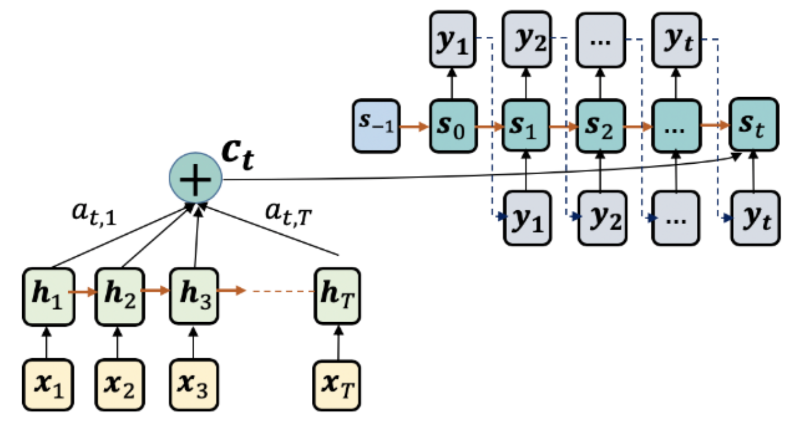
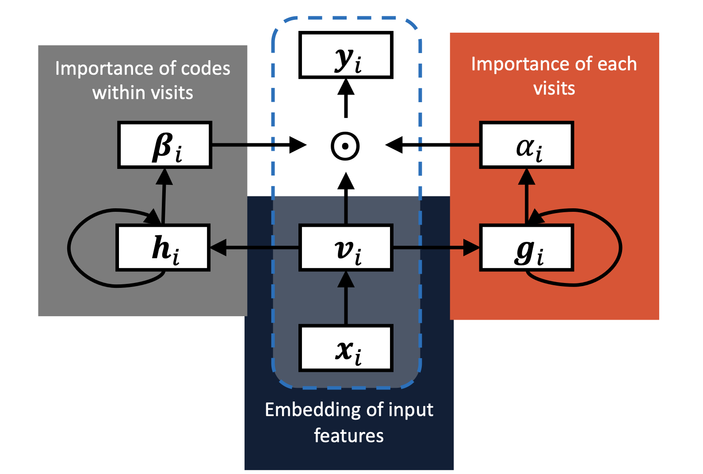
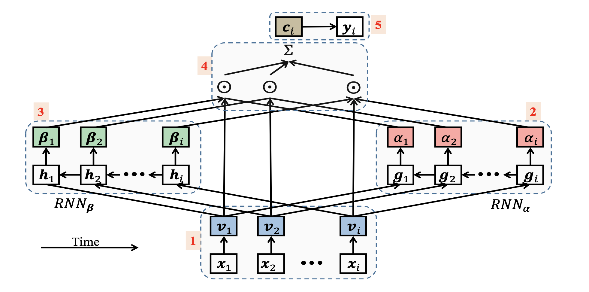
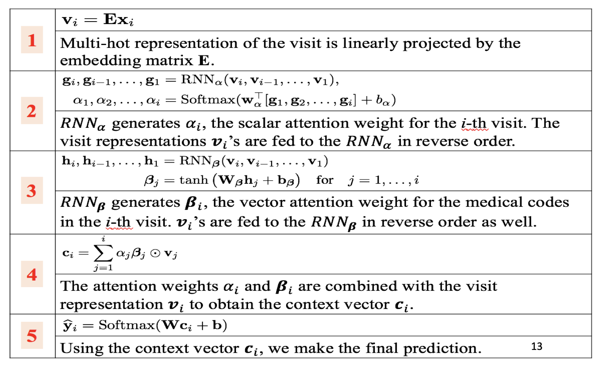
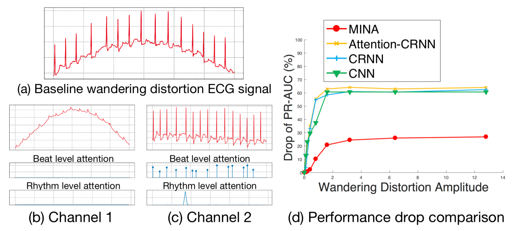

Attention Mechanisms and the RETAIN Model
"In healthcare, it's not enough to predict — we must explain why."
August 2026 · Giacomo Saccaggi
The Limitation of Encoder-Decoder Models
In previous articles, we explored how RNNs can model sequential patient data — processing visits one by one and building up a hidden state that captures the patient's medical history. But there's a fundamental problem with the standard encoder-decoder architecture.
Consider a patient with 50 hospital visits over 10 years. A vanilla RNN encoder compresses this entire history into a single fixed-length context vector. This vector must somehow capture every relevant detail: the diabetes diagnosed in visit 3, the cardiac event in visit 27, the medication change in visit 45.

Standard encoder-decoder: the entire input sequence is compressed into one context vector
The problem is information bottleneck. No matter how complex the patient history, we force it through a fixed-dimensional vector (typically 128-512 dimensions). For long sequences:
- Early information fades — despite LSTM/GRU gates, information from early visits gets diluted
- No selective focus — the decoder can't "look back" at specific visits that matter for the current prediction
- Capacity saturation — adding more visits doesn't proportionally increase information in the context
⚠️ The Bottleneck Problem
Imagine summarizing a 500-page medical record into a single paragraph. No matter how good your summarization, you'll lose critical details. That's exactly what happens when we compress a patient's entire history into a fixed-size vector.
Attention: Dynamic Context Vectors
The breakthrough insight: instead of forcing all information through one bottleneck, let the decoder selectively attend to different parts of the input for each output step.
Rather than a single static context vector c, we compute a different context vector ci for each output position i. This context is a weighted combination of all encoder hidden states, where the weights indicate which inputs are most relevant for the current prediction.

Attention mechanism: the context vector is dynamically computed for each output
The Attention Architecture
Given an encoder that produces hidden states h1, h2, ..., hT (one for each input position), and a decoder with state si at output position i:
Attention Computation
Step 1: Compute alignment scores
eij = score(si, hj)
How relevant is input position j for output position i?
Step 2: Normalize to attention weights
αij = exp(eij) / Σk exp(eik)
Softmax ensures weights sum to 1 across all input positions.
Step 3: Compute context vector
ci = Σj αij · hj
Weighted sum of encoder hidden states.
The attention weights αij form a probability distribution over input positions. High weights mean "pay attention here" — the model has learned that this input is important for the current output.
Alignment Models: Computing Attention Scores
The key design choice in attention is the score function — how do we measure compatibility between decoder state si and encoder state hj? Three main approaches dominate:

Different alignment functions for computing attention scores
1. Dot-Product Attention
The simplest approach: just take the dot product of the two vectors.
Dot-Product Attention
score(si, hj) = siT · hj
Pros: Fast, no learnable parameters
Cons: Requires s and h to have same dimension; can have magnitude issues with high dimensions
def dot_product_attention(decoder_state, encoder_states): """ Args: decoder_state: [batch, hidden_dim] encoder_states: [batch, seq_len, hidden_dim] Returns: scores: [batch, seq_len] """ # [batch, hidden_dim] @ [batch, hidden_dim, seq_len] -> [batch, seq_len] scores = torch.bmm( decoder_state.unsqueeze(1), # [batch, 1, hidden] encoder_states.transpose(1, 2) # [batch, hidden, seq_len] ).squeeze(1) # [batch, seq_len] return scores
2. General (Bilinear) Attention
Introduce a learnable weight matrix to allow different dimensions and learn a compatibility function:
General Attention
score(si, hj) = siT · Wa · hj
Where Wa is a learnable [decoder_dim × encoder_dim] matrix
Pros: Handles different dimensions; learns task-specific compatibility
Cons: O(d²) parameters
class GeneralAttention(nn.Module): def __init__(self, decoder_dim, encoder_dim): super().__init__() self.W_a = nn.Linear(encoder_dim, decoder_dim, bias=False) def forward(self, decoder_state, encoder_states): """ Args: decoder_state: [batch, decoder_dim] encoder_states: [batch, seq_len, encoder_dim] Returns: scores: [batch, seq_len] """ # Project encoder states: [batch, seq_len, decoder_dim] projected = self.W_a(encoder_states) # Dot product with decoder state scores = torch.bmm( projected, decoder_state.unsqueeze(2) # [batch, decoder_dim, 1] ).squeeze(2) # [batch, seq_len] return scores
3. Additive (Bahdanau) Attention
Concatenate the vectors and pass through a feedforward network:
Additive Attention
score(si, hj) = vaT · tanh(Wa · [si; hj])
Where [;] denotes concatenation, Wa projects to hidden dim, and va projects to scalar
Pros: Most expressive; can learn complex compatibility patterns
Cons: Slower due to concatenation and nonlinearity
class AdditiveAttention(nn.Module): def __init__(self, decoder_dim, encoder_dim, attention_dim): super().__init__() self.W_decoder = nn.Linear(decoder_dim, attention_dim, bias=False) self.W_encoder = nn.Linear(encoder_dim, attention_dim, bias=False) self.v = nn.Linear(attention_dim, 1, bias=False) def forward(self, decoder_state, encoder_states): """ Args: decoder_state: [batch, decoder_dim] encoder_states: [batch, seq_len, encoder_dim] Returns: scores: [batch, seq_len] """ # Project decoder: [batch, 1, attention_dim] dec_proj = self.W_decoder(decoder_state).unsqueeze(1) # Project encoder: [batch, seq_len, attention_dim] enc_proj = self.W_encoder(encoder_states) # Combine and compute scores combined = torch.tanh(dec_proj + enc_proj) # Broadcasting scores = self.v(combined).squeeze(2) # [batch, seq_len] return scores
| Method | Score Function | Parameters | When to Use |
|---|---|---|---|
| Dot-Product | sTh | 0 | Same dimensions, speed critical |
| General | sTWh | d₁ × d₂ | Different dimensions, moderate complexity |
| Additive | vTtanh(W[s;h]) | (d₁+d₂)×d_a + d_a | Maximum expressiveness needed |
The Interpretability Problem in Healthcare
Deep learning models achieve impressive predictive performance, but in healthcare, accuracy alone is insufficient. When a model predicts that a patient has 85% risk of heart failure, clinicians need to know why. What factors drove that prediction? Which visits were most concerning? Which diagnoses contributed most?
This isn't just about trust — it's about actionability. A doctor can't intervene on a black-box prediction. But if the model says "high risk because of the combination of cardiac dysrhythmia in visit 12 and coronary atherosclerosis in visit 18," that's actionable clinical information.
Categories of Interpretability
Interpretable models in healthcare generally fall into three categories:
| Category | Approach | Example | Limitation |
|---|---|---|---|
| Rule-based | Extract decision rules | "IF diabetes AND hypertension THEN high risk" | Rules can be too simple for complex patterns |
| Case-based | Find similar patients | "This patient is similar to these 5 who had heart failure" | Doesn't explain what made them similar |
| Risk-factor-based | Identify contributing factors | "Diagnosis X contributed +0.3, medication Y contributed -0.1" | Requires model architecture that supports attribution |
For temporal healthcare data (sequences of visits), we need models that can identify:
- Which visits were most important for the prediction
- Which variables within those visits (diagnoses, medications, labs) drove the contribution
This is exactly what attention mechanisms can provide — and the RETAIN model was specifically designed to exploit this for healthcare interpretability.
RETAIN: REverse Time AttentioN Model
RETAIN (Choi et al., NIPS 2016) is a neural network architecture designed specifically for interpretable healthcare prediction. Its key innovation: two-level attention that provides both visit-level and variable-level interpretability.

RETAIN architecture: two parallel RNNs generating visit-level (α) and variable-level (β) attention
The Core Insight
Standard attention tells us which visits are important. But a visit might contain 10 diagnosis codes, 5 medications, and 3 lab results. Which of these actually matters?
RETAIN introduces two attention mechanisms:
- α (alpha): Visit-level attention — which visits should we focus on?
- β (beta): Variable-level attention — within each visit, which variables matter?
The combination allows us to say: "The prediction is driven by cardiac dysrhythmia (variable) in visit 12 (visit)."
Why Reverse Time?
RETAIN processes visits in reverse chronological order (most recent first). Why?
💡 Reverse Time Processing
In healthcare prediction, recent events are typically more relevant than distant history. A cardiac event last month matters more than a childhood illness 30 years ago.
By processing in reverse time, the RNN sees the most recent (and most relevant) visits first, when its hidden state is freshest. This leads to better attention weights for recent visits.
RETAIN Architecture: Step by Step
Let's walk through the RETAIN architecture in detail. Given a patient with T visits, where each visit contains a set of medical codes:

RETAIN processes visits through embedding, two RNNs, and two attention mechanisms
Step 1: Embed Visit Codes
Each visit xi is represented as a multi-hot vector over all possible medical codes. We embed this into a dense representation:
vi = Wemb · xi
Where Wemb ∈ ℝd×|codes| is the embedding matrix, vi ∈ ℝd
Step 2: RNNα — Visit Importance
Process visits in reverse order through the first RNN to generate visit-level representations:
gi = RNNα(gi+1, vi)
Starting from gT (most recent) down to g1 (oldest)
Step 3: Compute α — Visit Attention Weights
Transform each gi into a scalar attention score, then normalize:
ei = wαT · gi + bα
αi = softmax(ei) = exp(ei) / Σj exp(ej)
αi ∈ [0,1] indicates the importance of visit i. Higher α means the model "attends" more to this visit.
Step 4: RNNβ — Variable Context
A second RNN (also in reverse time) generates context for variable-level attention:
hi = RNNβ(hi+1, vi)
Step 5: Compute β — Variable Attention Weights
Unlike α (scalar per visit), β is a vector with one weight per embedding dimension:
βi = tanh(Wβ · hi + bβ)
βi ∈ ℝd with values in [-1, 1]. Each dimension indicates whether that "feature direction" in the embedding space contributes positively or negatively.
Note: β uses tanh (not softmax) because:
- We want values that can be positive (contributing toward prediction) or negative (contributing against)
- Variables are not mutually exclusive — multiple can be important simultaneously
Step 6: Compute Context Vector
Combine visit attention (α), variable attention (β), and visit embeddings (v):
c = Σi=1T αi · (βi ⊙ vi)
Where ⊙ is element-wise multiplication. The context c ∈ ℝd aggregates information from all visits, weighted by their importance (α) and filtered by variable relevance (β).
Step 7: Final Prediction
Pass the context through a final layer for prediction:
ŷ = softmax(Wout · c + bout)
For binary classification (e.g., heart failure prediction), output is P(positive class).
Interpreting RETAIN: Contribution Analysis
The beauty of RETAIN is that we can decompose predictions into interpretable contributions. For each visit i and each medical code j within that visit:
Contribution of Code j in Visit i
contributionij = αi · (βi ⊙ Wemb[j, :])T · Wout
This tells us how much code j in visit i contributed to the final prediction.
Positive contribution: pushes prediction toward positive class (e.g., heart failure)
Negative contribution: pushes prediction toward negative class (e.g., no heart failure)

RETAIN contribution analysis: identifying which diagnoses in which visits drove the prediction
Clinical Interpretation Example
Consider a heart failure prediction with the following contribution analysis:
| Visit | α (Visit Importance) | Diagnosis | Contribution |
|---|---|---|---|
| Visit 12 | 0.35 | Cardiac Dysrhythmia (CD) | +0.42 |
| Visit 18 | 0.28 | Coronary Atherosclerosis (CA) | +0.31 |
| Visit 15 | 0.18 | Heart Valve Disorder (HVD) | +0.15 |
| Visit 8 | 0.12 | Skin Disorder (SD) | -0.08 |
| Visit 3 | 0.07 | Essential Hypertension | +0.05 |
This tells the clinician:
- Visit 12 is the most important (α=0.35), primarily due to cardiac dysrhythmia
- Cardiac conditions (CD, CA, HVD) are positive contributors — as expected for heart failure
- Skin disorder is a negative contributor — makes sense, it's unrelated to cardiac health
- The model has learned clinically meaningful patterns!
RETAIN Implementation in PyTorch
Let's implement the complete RETAIN model. We'll use GRUs as the RNN cells, which work well in practice and are computationally efficient.
The RETAIN Module
import torch import torch.nn as nn import torch.nn.functional as F class RETAIN(nn.Module): """ RETAIN: REverse Time AttentioN model for interpretable healthcare prediction. Two-level attention: - Alpha (α): visit-level attention weights - Beta (β): variable-level attention weights """ def __init__(self, num_codes, embed_dim=128, hidden_dim=128, num_classes=2, dropout=0.3): """ Args: num_codes: Size of medical code vocabulary embed_dim: Dimension of code embeddings hidden_dim: Hidden dimension for GRU cells num_classes: Number of output classes dropout: Dropout probability """ super().__init__() self.num_codes = num_codes self.embed_dim = embed_dim self.hidden_dim = hidden_dim # Embedding layer for medical codes self.embedding = nn.Linear(num_codes, embed_dim, bias=False) # RNN for visit-level attention (alpha) self.gru_alpha = nn.GRU( input_size=embed_dim, hidden_size=hidden_dim, batch_first=True, bidirectional=False ) # RNN for variable-level attention (beta) self.gru_beta = nn.GRU( input_size=embed_dim, hidden_size=hidden_dim, batch_first=True, bidirectional=False ) # Attention layers self.alpha_fc = nn.Linear(hidden_dim, 1) # Visit attention: hidden -> scalar self.beta_fc = nn.Linear(hidden_dim, embed_dim) # Variable attention: hidden -> embed_dim # Output layer self.output_fc = nn.Linear(embed_dim, num_classes) # Dropout self.dropout = nn.Dropout(dropout) def forward(self, x, lengths): """ Args: x: Padded visit sequences [batch_size, max_visits, num_codes] Each visit is a multi-hot vector of medical codes lengths: Actual number of visits per patient [batch_size] Returns: logits: [batch_size, num_classes] alpha: Visit attention weights [batch_size, max_visits] beta: Variable attention weights [batch_size, max_visits, embed_dim] """ batch_size, max_visits, _ = x.size() # Step 1: Embed visits # [batch, max_visits, num_codes] -> [batch, max_visits, embed_dim] v = self.embedding(x) v = self.dropout(v) # Step 2: Reverse the sequence for reverse-time processing # RETAIN processes from most recent to oldest v_reversed = self._reverse_sequence(v, lengths) # Step 3: GRU for alpha (visit-level attention) g, _ = self.gru_alpha(v_reversed) # [batch, max_visits, hidden] g = self._reverse_sequence(g, lengths) # Reverse back to original order # Step 4: Compute alpha attention weights # [batch, max_visits, hidden] -> [batch, max_visits, 1] -> [batch, max_visits] alpha_logits = self.alpha_fc(g).squeeze(-1) # Mask padding positions before softmax mask = self._create_mask(lengths, max_visits, x.device) alpha_logits = alpha_logits.masked_fill(~mask, float('-inf')) alpha = F.softmax(alpha_logits, dim=1) # [batch, max_visits] # Step 5: GRU for beta (variable-level attention) h, _ = self.gru_beta(v_reversed) # [batch, max_visits, hidden] h = self._reverse_sequence(h, lengths) # Reverse back # Step 6: Compute beta attention weights # [batch, max_visits, hidden] -> [batch, max_visits, embed_dim] beta = torch.tanh(self.beta_fc(h)) # Step 7: Compute context vector # c = sum_i alpha_i * (beta_i ⊙ v_i) # alpha: [batch, max_visits] -> [batch, max_visits, 1] # beta * v: [batch, max_visits, embed_dim] alpha_expanded = alpha.unsqueeze(-1) # [batch, max_visits, 1] context = (alpha_expanded * beta * v).sum(dim=1) # [batch, embed_dim] # Step 8: Final prediction context = self.dropout(context) logits = self.output_fc(context) # [batch, num_classes] return logits, alpha, beta def _reverse_sequence(self, x, lengths): """Reverse sequences for reverse-time processing.""" batch_size, max_len, dim = x.size() reversed_x = torch.zeros_like(x) for i in range(batch_size): length = lengths[i].item() # Reverse only the valid portion reversed_x[i, :length] = x[i, :length].flip(dims=[0]) return reversed_x def _create_mask(self, lengths, max_len, device): """Create boolean mask for valid positions.""" batch_size = lengths.size(0) mask = torch.arange(max_len, device=device).unsqueeze(0) mask = mask < lengths.unsqueeze(1) return mask
Custom Dataset for Variable-Length Visits
Patients have different numbers of visits. We need a custom collate function to handle padding:
from torch.utils.data import Dataset, DataLoader from torch.nn.utils.rnn import pad_sequence class PatientVisitDataset(Dataset): """Dataset for patient visit sequences.""" def __init__(self, patient_visits, labels, num_codes): """ Args: patient_visits: List of lists of lists patient_visits[i] = list of visits for patient i patient_visits[i][j] = list of code indices for visit j labels: Binary labels for each patient num_codes: Total number of unique codes """ self.patient_visits = patient_visits self.labels = labels self.num_codes = num_codes def __len__(self): return len(self.labels) def __getitem__(self, idx): visits = self.patient_visits[idx] # List of visits label = self.labels[idx] # Convert each visit to multi-hot vector visit_tensors = [] for visit_codes in visits: multi_hot = torch.zeros(self.num_codes) for code_idx in visit_codes: multi_hot[code_idx] = 1.0 visit_tensors.append(multi_hot) # Stack visits: [num_visits, num_codes] visits_tensor = torch.stack(visit_tensors) return visits_tensor, label def collate_fn(batch): """Custom collate function to handle variable-length visit sequences.""" visits_list, labels = zip(*batch) # Get lengths before padding lengths = torch.tensor([v.size(0) for v in visits_list]) # Pad visit sequences to same length # pad_sequence expects list of [seq_len, features] tensors padded_visits = pad_sequence(visits_list, batch_first=True, padding_value=0) labels = torch.tensor(labels, dtype=torch.long) return padded_visits, labels, lengths # Example usage patient_visits = [ [[0, 5, 23], [1, 5], [10, 15, 20]], # Patient 1: 3 visits [[2, 8], [3, 9, 12, 18]], # Patient 2: 2 visits [[4], [6, 7], [11], [14, 19]], # Patient 3: 4 visits ] labels = [0, 1, 0] dataset = PatientVisitDataset(patient_visits, labels, num_codes=100) dataloader = DataLoader(dataset, batch_size=2, shuffle=True, collate_fn=collate_fn)
Training RETAIN
import torch.optim as optim from sklearn.metrics import roc_auc_score, precision_recall_fscore_support def train_retain(model, train_loader, val_loader, num_epochs=30, lr=0.001): """Train RETAIN model with early stopping.""" device = torch.device("cuda" if torch.cuda.is_available() else "cpu") model = model.to(device) criterion = nn.CrossEntropyLoss() optimizer = optim.Adam(model.parameters(), lr=lr) best_auroc = 0 patience = 5 patience_counter = 0 for epoch in range(num_epochs): # Training phase model.train() total_loss = 0 for visits, labels, lengths in train_loader: visits = visits.to(device) labels = labels.to(device) lengths = lengths.to(device) optimizer.zero_grad() # Forward pass (ignore attention for training) logits, _, _ = model(visits, lengths) loss = criterion(logits, labels) loss.backward() # Gradient clipping for stability torch.nn.utils.clip_grad_norm_(model.parameters(), max_norm=5.0) optimizer.step() total_loss += loss.item() # Validation phase model.eval() all_probs = [] all_labels = [] with torch.no_grad(): for visits, labels, lengths in val_loader: visits = visits.to(device) lengths = lengths.to(device) logits, _, _ = model(visits, lengths) probs = F.softmax(logits, dim=1)[:, 1] all_probs.extend(probs.cpu().numpy()) all_labels.extend(labels.numpy()) val_auroc = roc_auc_score(all_labels, all_probs) avg_loss = total_loss / len(train_loader) print(f"Epoch {epoch+1:2d} | Loss: {avg_loss:.4f} | Val AUROC: {val_auroc:.4f}") # Early stopping if val_auroc > best_auroc: best_auroc = val_auroc patience_counter = 0 torch.save(model.state_dict(), "retain_best.pt") else: patience_counter += 1 if patience_counter >= patience: print(f"Early stopping at epoch {epoch+1}") break # Load best model model.load_state_dict(torch.load("retain_best.pt")) return model, best_auroc # Initialize and train model = RETAIN( num_codes=1000, embed_dim=128, hidden_dim=128, num_classes=2, dropout=0.3 ) model, best_auroc = train_retain(model, train_loader, val_loader) print(f"Best validation AUROC: {best_auroc:.4f}")
# Sample output: # Epoch 1 | Loss: 0.6912 | Val AUROC: 0.5823 # Epoch 2 | Loss: 0.6234 | Val AUROC: 0.6541 # Epoch 3 | Loss: 0.5678 | Val AUROC: 0.7123 # ... # Epoch 18 | Loss: 0.2891 | Val AUROC: 0.8456 # Early stopping at epoch 23 # Best validation AUROC: 0.8512
Extracting and Visualizing Attention
The key advantage of RETAIN is interpretability. Let's extract and visualize attention weights for individual patients:
import numpy as np import matplotlib.pyplot as plt def analyze_patient(model, patient_visits, code_to_name, device='cpu'): """ Analyze a single patient's prediction and extract attention weights. Args: model: Trained RETAIN model patient_visits: List of visits, each visit is list of code indices code_to_name: Dict mapping code index to human-readable name device: torch device Returns: prediction, alpha (visit attention), contributions per code """ model.eval() num_codes = model.num_codes # Convert to tensor visit_tensors = [] for visit_codes in patient_visits: multi_hot = torch.zeros(num_codes) for code_idx in visit_codes: multi_hot[code_idx] = 1.0 visit_tensors.append(multi_hot) visits = torch.stack(visit_tensors).unsqueeze(0).to(device) # [1, num_visits, num_codes] lengths = torch.tensor([len(patient_visits)]).to(device) with torch.no_grad(): logits, alpha, beta = model(visits, lengths) probs = F.softmax(logits, dim=1) # Extract numpy arrays prediction = probs[0, 1].item() # P(positive class) alpha_np = alpha[0, :len(patient_visits)].cpu().numpy() # [num_visits] beta_np = beta[0, :len(patient_visits)].cpu().numpy() # [num_visits, embed_dim] # Compute contributions # For each code in each visit, compute its contribution to the prediction W_emb = model.embedding.weight.cpu().numpy() # [embed_dim, num_codes] W_out = model.output_fc.weight.cpu().numpy() # [num_classes, embed_dim] contributions = [] for visit_idx, visit_codes in enumerate(patient_visits): visit_contributions = {} for code_idx in visit_codes: # contribution = alpha * (beta ⊙ embedding) @ W_out[1] (positive class) emb = W_emb[:, code_idx] # [embed_dim] contrib = alpha_np[visit_idx] * np.sum(beta_np[visit_idx] * emb * W_out[1]) code_name = code_to_name.get(code_idx, f"Code_{code_idx}") visit_contributions[code_name] = contrib contributions.append((visit_idx + 1, alpha_np[visit_idx], visit_contributions)) return prediction, contributions def visualize_contributions(prediction, contributions, top_k=10): """Visualize patient contribution analysis.""" print(f"Prediction (P(positive)): {prediction:.4f}") print(f"{'='*60}") # Collect all code contributions all_contributions = [] for visit_num, alpha, visit_contribs in contributions: for code_name, contrib in visit_contribs.items(): all_contributions.append((visit_num, code_name, alpha, contrib)) # Sort by absolute contribution all_contributions.sort(key=lambda x: abs(x[3]), reverse=True) print(f"{'Visit':8} | {'α (Visit Imp.)':14} | {'Diagnosis':25} | {'Contribution':12}") print(f"{'-'*65}") for visit_num, code_name, alpha, contrib in all_contributions[:top_k]: sign = "+" if contrib > 0 else "" print(f"Visit {visit_num:2} | {alpha:14.4f} | {code_name:25} | {sign}{contrib:.4f}") # Visualization fig, axes = plt.subplots(1, 2, figsize=(14, 5)) # Plot 1: Visit importance (alpha) visit_nums = [c[0] for c in contributions] alphas = [c[1] for c in contributions] axes[0].bar(visit_nums, alphas, color='steelblue') axes[0].set_xlabel('Visit Number') axes[0].set_ylabel('Attention Weight (α)') axes[0].set_title('Visit-Level Attention') # Plot 2: Top contributions top_contribs = all_contributions[:top_k] labels = [f"V{c[0]}: {c[1][:15]}" for c in top_contribs] values = [c[3] for c in top_contribs] colors = ['green' if v > 0 else 'red' for v in values] axes[1].barh(labels[::-1], values[::-1], color=colors[::-1]) axes[1].axvline(x=0, color='black', linestyle='-', linewidth=0.5) axes[1].set_xlabel('Contribution to Prediction') axes[1].set_title('Code-Level Contributions') plt.tight_layout() plt.show() # Example analysis code_to_name = { 0: "Cardiac Dysrhythmia", 1: "Essential Hypertension", 2: "Coronary Atherosclerosis", 3: "Heart Valve Disorder", 4: "Diabetes Type 2", 5: "Chronic Kidney Disease", 6: "Skin Disorder", 7: "Respiratory Infection", } patient = [[1, 4], [0, 2], [3, 5], [6, 7]] # 4 visits prediction, contributions = analyze_patient(model, patient, code_to_name) visualize_contributions(prediction, contributions)
# Sample output: # Prediction (P(positive)): 0.7823 # ============================================================ # Visit | α (Visit Imp.) | Diagnosis | Contribution # ----------------------------------------------------------------- # Visit 2 | 0.4123 | Cardiac Dysrhythmia | +0.3421 # Visit 2 | 0.4123 | Coronary Atherosclerosis | +0.2891 # Visit 3 | 0.2845 | Heart Valve Disorder | +0.1567 # Visit 1 | 0.1892 | Diabetes Type 2 | +0.0823 # Visit 3 | 0.2845 | Chronic Kidney Disease | +0.0456 # Visit 1 | 0.1892 | Essential Hypertension | +0.0234 # Visit 4 | 0.1140 | Respiratory Infection | -0.0123 # Visit 4 | 0.1140 | Skin Disorder | -0.0567
GRAM: Graph-based Attention with Medical Ontologies
While RETAIN provides interpretability through attention, it still learns embeddings from scratch. What if we could leverage existing medical knowledge?
GRAM (Graph-based Attention Model) incorporates medical ontologies — hierarchical knowledge structures like the ICD (International Classification of Diseases) code tree — to learn more robust embeddings, especially when training data is limited.

GRAM uses the ICD hierarchy to generate embeddings via graph-based attention
The Problem with Rare Codes
Medical code distributions are highly skewed. A few common codes (hypertension, diabetes) appear in millions of patients, while rare diseases might appear in only a handful. Standard embedding methods struggle with rare codes — they don't have enough training examples to learn good representations.
But medical ontologies tell us that rare codes have relationships with common codes. In ICD-9, code 428.0 (Congestive Heart Failure) is a child of category 428 (Heart Failure), which is under the broader category of circulatory diseases. If we've learned good embeddings for common heart failure codes, we should be able to infer embeddings for rare subtypes.
GRAM Architecture
GRAM generates embeddings through attention over the medical ontology graph:
GRAM Embedding Computation
For each code c:
1. Identify ancestors in the ontology: A(c) = {c, parent(c), grandparent(c), ...}
2. Compute attention over ancestors:
αi = softmax(ecT · uai)
3. Final embedding is weighted sum of ancestor embeddings:
gc = Σa ∈ A(c) αa · ea
Where ec is the basic embedding, ua is the attention vector for ancestor a
For rare codes, the attention will shift weight toward ancestors (more common, better-learned). For common codes, the attention stays on the code itself. This automatic balancing makes GRAM robust to data sparsity.
GRAM Results
GRAM shows particular strength on rare codes:
| Method | Common Codes (>1000 patients) | Rare Codes (<100 patients) | Overall |
|---|---|---|---|
| Standard Embedding | 0.821 | 0.612 | 0.756 |
| Pre-trained Word2Vec | 0.834 | 0.645 | 0.773 |
| GRAM | 0.839 | 0.721 | 0.802 |
The key insight: GRAM improves most on rare codes where the ontology provides the most value.
Putting It All Together: Heart Failure Prediction Pipeline
Let's build a complete pipeline for heart failure prediction using RETAIN:
import pickle from sklearn.model_selection import train_test_split def full_retain_pipeline(data_path, num_codes, embed_dim=128, hidden_dim=128): """ Complete RETAIN pipeline for heart failure prediction. Args: data_path: Path to preprocessed patient data num_codes: Vocabulary size embed_dim: Embedding dimension hidden_dim: GRU hidden dimension Returns: Trained model, test metrics, sample interpretations """ # Load data with open(data_path, 'rb') as f: data = pickle.load(f) patient_visits = data['visits'] # List of patients, each is list of visits labels = data['labels'] # Heart failure labels code_to_name = data['code_map'] # Code index to name # Train/val/test split train_visits, test_visits, train_labels, test_labels = train_test_split( patient_visits, labels, test_size=0.2, random_state=42, stratify=labels ) train_visits, val_visits, train_labels, val_labels = train_test_split( train_visits, train_labels, test_size=0.125, random_state=42, stratify=train_labels ) print(f"Train: {len(train_visits)}, Val: {len(val_visits)}, Test: {len(test_visits)}") print(f"Positive rate - Train: {sum(train_labels)/len(train_labels):.3f}, " f"Val: {sum(val_labels)/len(val_labels):.3f}, " f"Test: {sum(test_labels)/len(test_labels):.3f}") # Create datasets and loaders train_dataset = PatientVisitDataset(train_visits, train_labels, num_codes) val_dataset = PatientVisitDataset(val_visits, val_labels, num_codes) test_dataset = PatientVisitDataset(test_visits, test_labels, num_codes) train_loader = DataLoader(train_dataset, batch_size=32, shuffle=True, collate_fn=collate_fn) val_loader = DataLoader(val_dataset, batch_size=64, shuffle=False, collate_fn=collate_fn) test_loader = DataLoader(test_dataset, batch_size=64, shuffle=False, collate_fn=collate_fn) # Initialize model model = RETAIN( num_codes=num_codes, embed_dim=embed_dim, hidden_dim=hidden_dim, num_classes=2, dropout=0.3 ) # Train model, best_val_auroc = train_retain(model, train_loader, val_loader, num_epochs=50) # Evaluate on test set device = next(model.parameters()).device model.eval() all_probs = [] all_labels = [] with torch.no_grad(): for visits, labels, lengths in test_loader: visits = visits.to(device) lengths = lengths.to(device) logits, _, _ = model(visits, lengths) probs = F.softmax(logits, dim=1)[:, 1] all_probs.extend(probs.cpu().numpy()) all_labels.extend(labels.numpy()) test_auroc = roc_auc_score(all_labels, all_probs) # Compute precision/recall at threshold 0.5 preds = [1 if p > 0.5 else 0 for p in all_probs] precision, recall, f1, _ = precision_recall_fscore_support( all_labels, preds, average='binary' ) print(f"{'='*50}") print("TEST RESULTS") print(f"AUROC: {test_auroc:.4f}") print(f"Precision: {precision:.4f}") print(f"Recall: {recall:.4f}") print(f"F1: {f1:.4f}") # Sample interpretation print(f"{'='*50}") print("SAMPLE INTERPRETATION") sample_patient = test_visits[0] prediction, contributions = analyze_patient(model, sample_patient, code_to_name) visualize_contributions(prediction, contributions) return model, {'auroc': test_auroc, 'precision': precision, 'recall': recall, 'f1': f1}
# Sample output: # Train: 7000, Val: 1000, Test: 2000 # Positive rate - Train: 0.082, Val: 0.079, Test: 0.085 # Epoch 1 | Loss: 0.4123 | Val AUROC: 0.6234 # ... # ================================================== # TEST RESULTS # AUROC: 0.8512 # Precision: 0.4234 # Recall: 0.6891 # F1: 0.5245
Results Comparison
Comparing RETAIN against baseline models on heart failure prediction:
| Model | Interpretability | Val AUROC | Test AUROC |
|---|---|---|---|
| Logistic Regression | High (coefficients) | 0.742 | 0.735 |
| Random Forest | Medium (feature importance) | 0.789 | 0.778 |
| GRU (standard) | Low (black box) | 0.856 | 0.843 |
| GRU + Attention | Medium (visit attention) | 0.861 | 0.849 |
| RETAIN | High (visit + variable) | 0.858 | 0.851 |
| RETAIN + GRAM | High | 0.867 | 0.862 |
Key observations:
- RETAIN matches GRU performance while providing interpretability
- The two-level attention is crucial — simple visit attention (GRU + Attention) doesn't tell us which codes matter
- GRAM helps most when rare codes are important for prediction
- Interpretable models don't have to sacrifice accuracy!
💡 Clinical Adoption
RETAIN's interpretability has made it popular in clinical settings. When a model can explain why it's predicting high risk, clinicians are more likely to trust and act on the predictions.
Several hospitals have deployed RETAIN-based systems for early warning of sepsis, heart failure, and readmission risk — always with interpretable outputs that clinicians can validate against their medical knowledge.
Summary
We covered attention mechanisms and their application to interpretable healthcare prediction:
| Concept | Key Idea | Application |
|---|---|---|
| Attention | Dynamic, weighted focus on inputs | Overcomes fixed context bottleneck |
| Alignment Models | Dot-product, General, Additive | Different expressiveness/speed tradeoffs |
| Softmax Weights | αij = probability of attending to input j | Interpretable importance scores |
| RETAIN | Two-level attention (α visits, β variables) | Visit + code level interpretability |
| Reverse Time | Process most recent visits first | Better attention for recent events |
| Contribution Analysis | α × (β ⊙ embedding) × Wout | Per-code contribution to prediction |
| GRAM | Graph attention over medical ontologies | Robust embeddings for rare codes |
⚠️ Practical Considerations
- Attention ≠ Explanation: High attention doesn't always mean causal importance. Validate interpretations with domain experts.
- Temporal leakage: Ensure you're not using future information to predict past events.
- Class imbalance: Heart failure is rare (~5-10%). Use appropriate loss weighting or sampling strategies.
- Code quality: EHR coding practices vary by institution. Models may learn coding patterns, not just clinical patterns.
References
- Bahdanau, Cho, Bengio (2015). "Neural Machine Translation by Jointly Learning to Align and Translate" — Original attention mechanism
- Choi et al. (2016). "RETAIN: An Interpretable Predictive Model for Healthcare using Reverse Time Attention Mechanism" — RETAIN paper (NIPS 2016)
- Choi et al. (2017). "GRAM: Graph-based Attention Model for Healthcare Representation Learning" — GRAM paper (KDD 2017)
- Luong, Pham, Manning (2015). "Effective Approaches to Attention-based Neural Machine Translation" — Alignment models comparison
- Vaswani et al. (2017). "Attention Is All You Need" — Transformer architecture